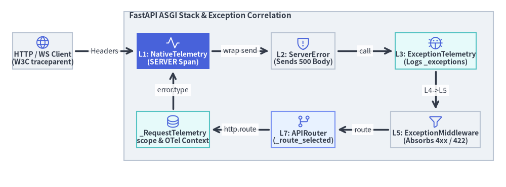
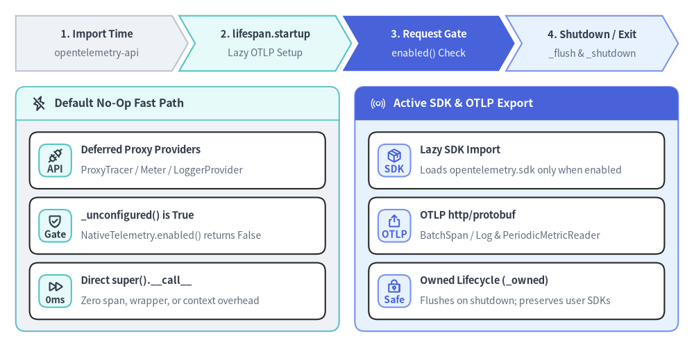

NativeTelemetry・遅延ランタイム・例外スパン記録
FastAPI v0.162.2 は、fastapi/telemetry/（__init__.py・_api.py・_asgi.py・_runtime.py）に組み込みの OpenTelemetry サブシステムを備えています。コア依存パッケージを軽量な opentelemetry-api のみに限定することで、SDK 未設定時にはオーバーヘッドゼロの no-op として振る舞う一方、OpenTelemetry SDK プロバイダが有効化されると W3C トレース伝播・低カーディナリティなルートスパン・子オペレーションスパン・HTTP サーバーメトリクス・重複排除された例外テレメトリを自動的に計測します。

1. SDK 非依存コア設計と遅延ランタイム結合（_runtime.py）
fastapi/telemetry/ の設計上の最重要方針は、テレメトリを送信しないアプリケーションに対して重い SDK インポートやリクエスト単位のオーバーヘッドを一切課さないことです。FastAPI は API レベルの計装と SDK・エクスポータ初期化を明確に分離することでこれを実現しています。
- 遅延プロキシプロバイダの判定（
_api.py）:fastapi本体が依存するのはopentelemetry-api>=1.44.0のみであり、その初期グローバルプロバイダは_DEFERRED_PROVIDERSに列挙された軽量な no-op プロキシ（ProxyTracerProvider・_ProxyMeterProvider・ProxyLoggerProvider）です。_unconfigured(provider)は(type(provider).__module__, type(provider).__name__) in _DEFERRED_PROVIDERSで未設定状態を判定します。 - ホットパスのゲート判定（
NativeTelemetry.enabled()）:self._telemetryの明示プロバイダがすべてNoneであり、かつ 3 シグナルのグローバルプロバイダがすべて_unconfigured(...)を満たす場合、NativeTelemetry.enabled()はFalseを返します。このときFastAPI.__call__は_RequestTelemetryの生成もヘッダ解析もsend/receiveのラップも行わず、即座にawait super().__call__(scope, receive, send)へ短絡します。 - Lifespan 起動時の SDK・OTLP 遅延インポート（
_runtime.py）: オプションパッケージopentelemetry-sdkとopentelemetry-exporter-otlp-proto-http（fastapi[opentelemetry]またはfastapi[standard]で導入）は、モジュール読み込み時にはインポートされません。lifespan.startupイベント時に呼ばれる_configure_from_environment(config)の内部で、auto_configure=True（またはFASTAPI_OTEL_AUTO_CONFIGURE=true）かつOTEL_SDK_DISABLED != "true"かつ有効なhttp/httpsのOTEL_EXPORTER_OTLP_*（http/protobuf）エンドポイントが存在するときに限り、遅延インポートされます。 - プロバイダ所有権の保護（
_ownedと_configured）: 再入ロック_lockの保護下で、_configure_from_environment()は(signal, provider)の組ごとに 1 度だけBatchSpanProcessor(OTLPSpanExporter(...))・PeriodicExportingMetricReader(OTLPMetricExporter(...))・BatchLogRecordProcessor(OTLPLogExporter(...))を登録します。FastAPI 自身が生成したコンポーネントのみが_ownedに記録され、lifespan.shutdown.complete（および起動・終了失敗時）にawait run_sync(_flush)でフラッシュされ、プロセス終了時にatexit.register(_shutdown)で閉じられます。アプリケーション側から渡されたプロバイダを FastAPI が勝手にシャットダウンすることはありません。

2. NativeTelemetry のスパン・コンテキスト・メトリクス機構（_asgi.py）
アクティブな HTTP または WebSocket スコープで NativeTelemetry.__call__ が実行されると（config["exclude"](scope) で除外されておらず、かつ _legacy_otel() が既存の OpenTelemetryMiddleware を検出しない場合）、リクエストライフサイクル全体にわたって以下の 5 段階を制御します。
- W3C コンテキスト抽出とクエリサニタイズ:
propagate.extract(Headers(scope=scope), getter=_HEADERS_GETTER)により受信ヘッダからtraceparent・tracestate・複数行baggageをparentとして抽出し、otel_context.attach(parent)でアタッチします。_HTTP_METHODS（またはOTEL_INSTRUMENTATION_HTTP_KNOWN_METHODS）に含まれない未知の HTTP メソッドは"_OTHER"に正規化（元の値はhttp.request.method_originalに保持）し、_SENSITIVE_QUERY_PARAMETERS（X-Amz-Signature・X-Amz-Credential・X-Amz-Security-Token・sig・X-Goog-Signature）はurl.query上で"REDACTED"にマスクします。 - ルート
SpanKind.SERVERスパン開始と_RequestTelemetry格納: スキーマ URLhttps://opentelemetry.io/schemas/1.44.0のもとでtracer.start_span(span_method, context=parent, kind=SpanKind.SERVER, attributes=span_attributes)を開始します。未一致の404スキャンアクセスでスパン名のカーディナリティが爆発しないよう、初期スパン名はメソッド名のみ（"GET"・"POST"・"WS"）とします。生成された_RequestTelemetryは ASGI ルーティング層から参照するscope["fastapi.telemetry"]と、ワーカースレッドからもget_telemetry_data()で参照可能なotel_context（キー_REQUEST_TELEMETRY_KEY = "fastapi.request"）の双方へ同時に格納されます。 - 低カーディナリティなルート名更新（
_route_selected()）:APIRouter.appがルートに一致すると（Mount経由時は_mount_prefixを連結しながら）、_route_selected(scope=scope, path=route.path_format, mount=...)が呼ばれます。ここでスパン属性http.routeが設定され、span.update_name(f"{span_method} {route}")によって"GET /items/{item_id}"のようなルートテンプレート名へと更新されます。 - 細粒度な子オペレーションスパン（
_operation()）:operation_spans=True（デフォルト）のとき、_traced_operation()はcode.function.name = f"{module}.{qualname}"属性付きでfastapi.dependencies・fastapi.endpoint・fastapi.serialization・fastapi.background_taskの子スパンを生成します。 - Exemplar 相関メトリクスとゼロ保持クリーンアップ:
NativeTelemetry._instruments()はhttp.server.request.duration（秒単位のHistogram、境界_DURATION_BUCKETSは0.005〜10.0）とhttp.server.active_requests（UpDownCounter）を生成します。finish()内では、SERVERスパンがまだカレントである間にduration.record(...)を記録してからspan.end()を呼ぶため、メトリクス Exemplar とトレース ID が正確に紐づきます。最後に外側のfinally:ブロックでrequest_telemetry.data = Noneおよび_exceptions.clear()を実行し、保持されたコンテキストからリクエスト本文や引数がリークしないよう消去します。
3. ExceptionTelemetryMiddleware が ExceptionMiddleware・ServerErrorMiddleware と協調する理由
ASGI スタックでは、想定内の HTTP エラー、カスタム例外ハンドラ、未処理の 500 クラッシュがそれぞれ異なる層で処理されるため、例外テレメトリの配置には厳密な順序設計が求められます。
- 制御された
4xx/422例外はExceptionMiddleware（L5）内側で完結: エンドポイントや依存関数がHTTPException(404)やRequestValidationError（422）を送出した場合、L5 のExceptionMiddleware（およびrequest_response()内のwrap_app_handling_exceptions）がそれを捕捉して通常の HTTP レスポンスへ変換するため、外側のExceptionTelemetryMiddleware（L3）へ例外が伝播することはありません。status_code < 500の応答に対してfinish()はfailed = Falseと判定し、SERVERスパンのステータスをStatusCode.UNSET（error.typeなし）に保ちます（なおlogs=Trueの場合、_validation_failed()がfastapi.validation.error_count属性付きのWARNログイベントfastapi.validation.failedを出力します）。同様に、子スパン用の_traced_operation()もHTTPException・RequestValidationError・WebSocketException・WebSocketRequestValidationError・正常な WebSocket 切断（1000,1001）をエラーステータス対象から除外します（カスタム例外ハンドラが5xxステータスを返した場合のみ、finish()がerror.type = str(status_code)とStatusCode.ERRORを付与します）。 - 未処理クラッシュと
ServerErrorMiddlewareのwrapped_send順序問題（L2 の内側に L3 を置く理由）: 未処理のZeroDivisionErrorがuser_middlewareを突き抜けると、L2 のServerErrorMiddlewareに到達します。ここで重要なのは、ServerErrorMiddlewareは 例外を再送出する前にsend()を呼んで HTTP500レスポンス本文を最後まで送信し終える という点です。最終チャンクsend({"type": "http.response.body", "more_body": False})がNativeTelemetry.wrapped_send()を通過した瞬間、NativeTelemetryは即座にfinish()を呼んでSERVERスパンを終了させます。この時点ではまだServerErrorMiddlewareからNativeTelemetryのexcept BaseException:節へ例外が戻ってきていません。そこでExceptionTelemetryMiddlewareを L3（ServerErrorMiddlewareの直下）に配置することで、L2 が500応答を送信するよりも先に_exception(scope=scope, exc=exc)を実行してrequest_telemetry._exceptionsへの追加とhttp.server.request.exceptionERRORログ出力を完了させ、直後のfinish()でerror.type = "ZeroDivisionError"とStatusCode.ERRORを確実に記録できます。 - オブジェクト同一性による二重記録の防止:
ServerErrorMiddlewareが500応答を送信した後に例外を再送出すると、最外層NativeTelemetry（L1）のexcept BaseException as exc:節も_exception(scope=scope, exc=exc)とfinish(exc)を呼び出します（これはCancelledErrorなどのBaseExceptionや L2 自身のクラッシュも漏らさないためです）。_exception()内部ではif not any(previous is exc for previous in seen):によってオブジェクト同一性（is）で重複判定を行い、finish()もif finished: returnで冪等性を保証しているため、未処理例外が二重にログ記録されたり二重に終了処理されたりすることはありません。
4. InMemorySpanExporter による出力スパン・属性の検証
以下のスニペットは、OpenTelemetry SDK の TracerProvider と InMemorySpanExporter を FastAPI(telemetry=...) に接続し、W3C traceparent の継承、低カーディナリティな http.route スパン名更新、404 時の UNSET ステータス維持、および 500 クラッシュ時の error.type 記録を検証します。
from fastapi import FastAPI, HTTPException
from fastapi.testclient import TestClient
from opentelemetry.sdk.trace import TracerProvider
from opentelemetry.sdk.trace.export import SimpleSpanProcessor
from opentelemetry.sdk.trace.export.in_memory_span_exporter import InMemorySpanExporter
from opentelemetry.trace import SpanKind, StatusCode
exporter = InMemorySpanExporter()
provider = TracerProvider()
provider.add_span_processor(SimpleSpanProcessor(exporter))
app = FastAPI(telemetry={"tracer_provider": provider})
@app.get("/items/{item_id}")
def get_item(item_id: int) -> dict[str, int]:
if item_id == 0:
raise HTTPException(status_code=404, detail="Item not found")
if item_id < 0:
raise ZeroDivisionError("negative item crash")
return {"item_id": item_id}
trace_id_hex = "4bf92f3577b34da6a3ce929d0e0e4736"
traceparent = f"00-{trace_id_hex}-00f067aa0ba902b7-01"
with TestClient(app, raise_server_exceptions=False) as client:
# 1. 200 OK: W3C traceparent 継承、子オペレーションスパン + 低カーディナリティ名
assert client.get("/items/7", headers={"traceparent": traceparent}).status_code == 200
spans = exporter.get_finished_spans()
assert {"fastapi.dependencies", "fastapi.endpoint", "GET /items/{item_id}"} <= {
s.name for s in spans
}
server_span = next(s for s in spans if s.kind == SpanKind.SERVER)
assert f"{server_span.context.trace_id:032x}" == trace_id_hex
assert server_span.attributes["http.route"] == "/items/{item_id}"
assert server_span.attributes["http.response.status_code"] == 200
assert server_span.status.status_code == StatusCode.UNSET
exporter.clear()
# 2. 制御された 404 HTTPException: L5 で吸収 -> UNSET 維持・error.type なし
assert client.get("/items/0").status_code == 404
span_404 = next(s for s in exporter.get_finished_spans() if s.kind == SpanKind.SERVER)
assert span_404.status.status_code == StatusCode.UNSET
assert "error.type" not in span_404.attributes
exporter.clear()
# 3. 未処理の 500 クラッシュ: L2 の 500 送信前に L3 が ZeroDivisionError を記録
assert client.get("/items/-1").status_code == 500
span_500 = next(s for s in exporter.get_finished_spans() if s.kind == SpanKind.SERVER)
assert span_500.attributes["http.response.status_code"] == 500
assert span_500.attributes["error.type"] == "ZeroDivisionError"
assert span_500.status.status_code == StatusCode.ERROR
コンパイル済みの APIRoute 定義と ModelField スキーマから OpenAPI 3.1.0 ドキュメントおよび対話型 UI エンドポイントがどのように合成されるかについては、次章の get_openapi()・$defs 集約・Docs UIへ進んでください。